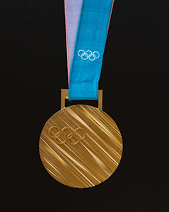

Total Medals Awarded Between 1924-2014 Split By Genders:
In this pie chart we’re looking at the total medals awarded between 1924 and 2004. Throughout that course of time, there were a total of 3,944 medals awarded to men and 1,826 medals awarded to women. The gender bias was stronger at the beginning of the century, and we will look at that in future charts.
Medals Awards To Each Gender Separated By Year:
In this bar chart we can see the amount of medals awarded to each gender by year. In the Olympics spanning 1924-1392, women were awarded a total of 6 medals per year. This means that there was a maximum of two events per year of the Olympics for that time. Meanwhile, men received an average of 101 medals per Olympic year. This means 94% of the medals awarded during that time were given to men over women.
Medal Disparity Percentage Within Genders Over Time:
Here, we look at the disparity of medals awarded using percentages. The biggest disparity took place in 1924 with 94.92% of medals awarded to men. The most notable jumps to equality took place in 1956-1960 and 1994-1998 where we saw a closing of the gap by nearly 10%. Since 1998, the pace of closing the gap has slowed as and we’ve yet to see a 50/50 split in events/medals awarded.
Events With The Largest Disparity
In this radar chart we are examining the medals awarded by event. This data includes all medals awarded throughout the timeframe we’re looking at. At first, the chart we’re looking at displays the biggest disparity, which is Ice Hockey. From 1924-2014 men were awarded 1231 medals whereas women were awarded 305 medals. In the second instance of this chart, we’ve removed Ice Hockey to close the gap and take a closer look at some of the events with the biggest disparities. Pairs is shown as an example of what a 50/50 split would look like. Ideally, every event would have a similar position meaning the Olympics would have complete equality.
Note: if you didn't see the chart update, please refresh the browser and wait 8 seconds.
Conclusion:

In these examples, we started out by looking at the total amount of medals awarded between 1924 and 2014, then looked at the actual medal count year over year. Then we looked at the difference in percentages, and finally what sport was showing the biggest disparity. Ice Hockey shows the biggest difference in awarded medals and should be examined why. We’ve seen that while the Olympics have improved the gender bias against women from 1924-2014, there is still a significant gap that should be closed. Every event held by the Olympics should have a category for each gender, allowing men and women to compete equally.